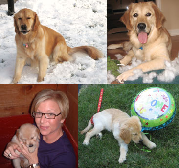

November 2012

My name is Maggie (or Maggie Moo as I’m affectionately called). I was born April 11, 2006. There were 7 of us altogether. Even though I was the firstborn I was the runt of the litter. Guess that’s why I crave attention. I was so excited to pick my mom to love me. Mom and grandma threw a puppy shower for me and all their friends came to welcome me home. I’ve always been a good dog and NEVER chewed anything except my toys and an occasional tissue (not even toilet paper, go figure). I’m very sweet and love people, especially when they rub my belly! I’m in love with Roger and when I hear him outside I kind of go crazy by jumping up and down and barking excitedly. I love to swim and roll in the grass. That makes mom sneeze but she lets me anyhow. I love my walks most in the winter when I can roll in the ice and snow, being a golden and all. And I almost always carry around a toy. Pampered Pets have taken such good care of me for years now. They are really a part of my family. |